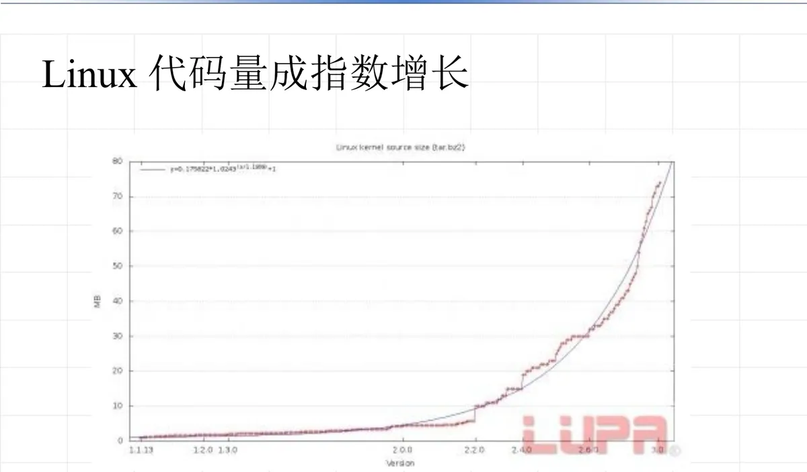

操作系统原理 · 第 2 章 结构与硬件支持
2.2 操作系统的组织结构
上一节把操作系统看成「裸机之上的一台虚拟机」，这一节关心的是这台虚拟机内部是怎么搭起来的。先看操作系统这类软件的规模有多大、为什么难写；再引出本节的核心问题——各个功能模块如何组织、模块之间如何调用；最后按发展顺序介绍单体结构、模块结构和可扩展结构三种组织方式。
1. 操作系统设计之难
操作系统设计呈现出三个特征：
- 复杂程度高：功能多、状态多、并发关系错综复杂；
- 研制周期长：从立项到可用往往以年计；
- 正确性难保证：并发带来的时序不确定性，使得错误难以复现、难以根除。
这三条不是空话，从历代系统的规模数据上就能看出来：
| 系统 | 规模 |
|---|---|
| CTSS | 32000 行 |
| OS/360 | 百万条指令，4000 个模块，5000 人年 |
| Multics | 千万条指令 |
| Windows 2000 | 3200 万行，2500 人参与 |
课件还用一张图给出了 Linux 代码量的增长趋势：规模呈指数增长。这意味着靠个人英雄式的开发已经不可能，必须有良好的组织结构，才能让成百上千人协作开发、让系统还能被理解和维护。

2. 为什么要研究组织结构
研究操作系统的组织结构，有助于我们了解如何设计一个好的系统。具体要回答两个问题：
- 操作系统各个功能模块（进程管理、处理机管理、存储管理、设备管理、文件系统等）如何组织；
- 各个模块之间如何调用。
这两个问题决定了系统的可理解性、可修改性和可扩展性——同样的功能，组织方式不同，工程代价可能相差一个数量级。
3. 操作系统组织结构的发展
组织结构大致沿着「单体结构 → 模块结构 → 可扩展结构（微内核）」的路线演进，中间一步的关键正是从无序走向有序。
（1）单体结构
最早的做法是把所有功能写在一起，整个操作系统是一个大的整体程序，模块之间可以任意互相调用。它实现直接、效率高，但随着规模膨胀，模块之间的调用关系变成一张扯不清的网：改一处可能牵动全身，正确性难以保证——上面表 1 中的巨型系统，正是单体结构遇到的困境。
（2）模块结构：模块化与层次结构
改进的方向是把系统切分成模块，并让模块之间的关系从无序变得有序，具体有两种手段：
- 模块化：把系统按功能划分为若干模块，遵循一条原则——模块内部高聚合，模块之间低耦合。模块内部联系紧密（高聚合），模块之间尽量少依赖（低耦合），这样每个模块都能独立地理解、修改和验证；
- 层次结构：把模块按依赖关系分层，上层只能调用下层的服务，不能反向调用。层次结构把「谁能调用谁」规定死，进一步降低了耦合，也让系统的正确性可以逐层论证。
（3）可扩展结构（微内核）
再往前一步是可扩展结构，代表做法是微内核：内核只保留最必需的功能（如基本的进程调度、中断处理、消息传递），把设备管理、文件系统等大部分服务移到内核之外，以服务进程的形式运行。这样做的好处是内核小、易验证、易扩展，增加新服务不必改动内核本身；代价是服务之间要通过消息传递通信，性能开销相应增加。这也是当代操作系统（如 Linux 的模块化内核、各类微内核系统）在结构上持续讨论的取舍。
本节小结
- 操作系统设计有三个特征：复杂程度高、研制周期长、正确性难保证；
- 规模数据说明了复杂度的量级：CTSS 32000 行，OS/360 为百万条指令、4000 个模块、5000 人年，Multics 千万条指令，Windows 2000 达 3200 万行、2500 人参与；Linux 的代码量则呈指数增长；
- 研究组织结构要回答两个问题：各功能模块（进程管理、处理机管理、存储管理、设备管理、文件系统等）如何组织，模块之间如何调用；
- 组织结构的发展路线是单体结构 → 模块结构 → 可扩展结构（微内核）；
- 模块化的原则是模块内部高聚合、模块之间低耦合；层次结构进一步规定上层只能调用下层；微内核把非必需功能移出内核，换取可扩展性与可验证性。